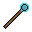

Topic tools
Tools
Items
| alternode:wand | Admin tool to retrieve node node coordinates, name, & some select meta info. |
| alternode:pencil | Player tool to alter infotext meta value. |
| alternode:key | Player tool to set/unset owner meta value. |
Items
- alternode:wand
-
Admin tool to retrieve node node coordinates, name, & some select meta info.
Only players with the
serverprivilege can use this itemPlace:
-
Print node coordinates, name, & some select meta info.
Image:
-

Use:
-
Opens formspec to retrieve & set/unset meta attributes.
- alternode:pencil
-
Player tool to alter infotext meta value.
Image:
Use:
-
Opens formspec to set/unset infotext meta attribute.
- alternode:key
-
Player tool to set/unset owner meta value.
Place:
-
Prints owner status to chat log.
Image:

Use:
-
Sets/Unsets user as owner.